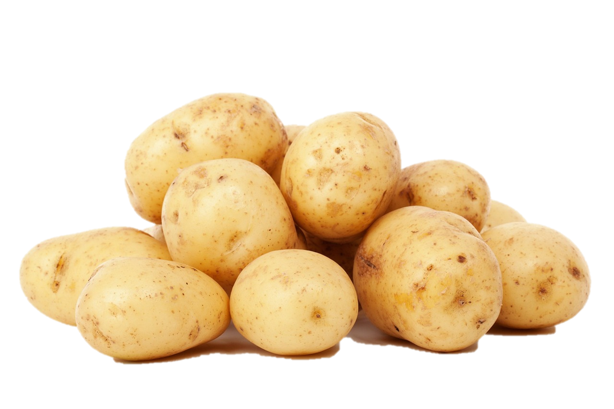

Aardappels
Aardappels zijn echt helemaal de shit, zie hier rechts bijvoorbeeld wat aardappels. Ik ben al mijn hele leven erg fan van aardappelen in alle vormen en maten. Als kind natuurlijk vooral fan van alle gefrituurde varianten maar tegenwoordig heb ik ook veel respect voor andere vormen zoals puree of ovenaardappels. Zelfs dingen als Kumpir zijn lekker. Kijk maar even rond op de site.

Frieten
Iets over frieten